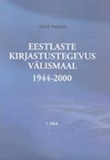

|  |
| About IR |
| Editors |
| Author instructions |
| Copyright |
| Author index |
| Subject index |
| Search |
| Reviews |
| Register |
| Home |
Valmas, Anne. Eestlaste kirjastustegevus välismaal 1944-2000 [Publishing activities of Estonians outside Estonia 1944-2000]. [Two volumes]. Tallinn: Tallinna Pedagoogikaülikool, 2003. Volume 1: 205 p. ISBN 9985 58 284 5. 80.00 Estonian Kroon (Approx. £3.60). Volume 2: 397 p. ISBN 9985 58 284 3. 220.00 Estonian Kroon. (Approx. £9.85)
These two volumes in Estonian described above have reached me through my colleagues doing research in publishing and media in Lithuania. It happened that, at the same moment, I was asked to help in one of their projects regarding Lithuanian emigrants' publishing, libraries, and bibliography. That work provided the background to evaluate the importance of the work produced by Anne Valme.
Research on "Publishing activities of the Estonians outside Estonia during 1944-2000" consists of two volumes:
- a monograph based on a doctoral thesis by Valmas;
- a bibliographic index of books published by Estonian publishers abroad after World War II.
Books published in rare, small languages are not very often reviewed in international journals. One of the reasons is the lack of users who would be able to understand the text. Besides, publishing history is not exactly the subject that "Information research" usually covers. However, I thought that this particular publication should get the attention of the public beyond the Baltic area and the book research community for several reasons. First, it deals with an interesting phenomenon of communication and information transfer between cultures. Secondly, this phenomenon belongs equally to the Estonian culture and to the cultures of the countries of residence of Estonian emigration communities. The second volume of the work is a valuable bibliographic source not only for Estonians but also for researchers and librarians throughout the world. Thirdly, both volumes cover a long period of 56 years to the year 2000 and, thus, can reveal the trends in the development of emigrants' information production and dissemination characterising the whole post-war period.
Let us examine if the work lives up to the expectations (at least to my expectations).
Close inspection of the first volume reveals that the work is of a descriptive character. This is a common feature of similar works in Eastern Europe. However, the description of the subject of the research is based on fundamental and sound investigation of a huge store of archival, bibliographic, historical, etc. material. Amazing effort was put into finding, checking, and describing the publications. This information concentrated in the second volume forms a foundation not only for the described work but also for future research.
The author examines publishing within the theoretical framework of book culture. Yuri Lotman's interpretation of the relations of culture, texts (in which it is preserved), communication (among the texts, texts and their surroundings, texts and readers, etc.), language, and semiosphere is used to interpret the findings. I would ask for deeper development of this interesting and fruitful approach in the discussion and conclusion chapters. The author also demonstrates good knowledge of previous research on her subject and and of historical sources.
The results are presented in two main chapters revealing two main aspects of research:
- the activity of Estonian publishers (publishing houses, organisations, private persons) in different countries of residence (Chapter 2), and
- statistical, typological, subject, linguistic, and temporal analysis of the body of publications (Chapter 3).
Each chapter about the publishing activity in a certain country starts with the description of the general situation and the Estonian community. The detailed activity of each publisher is presented according to its importance within categories of specific types of publishers. The longest chapter depicts Estonian publishing in Sweden, which was the biggest centre of Estonian cultural activities abroad for a long time, then in Canada, the USA, Germany, Australia and Great Britain. The dynamics, the growth, concentration, and decline of Estonian publishing abroad is the issue in the following chapter. It is also interesting to follow the comparison of publishing statistics as well as changing relations with the publishing in Estonia. All in all this work may serve as a good example of research into the information space of exile cultures surviving and changing in difficult situation among the influences of various cultural, political, economic, and other factors.
A good summary in English helps a foreign reader to understand the provided data and the research results. There is an index of names and an extensive list of references, which also reveals that the use of modern Western theories was very limited.
The second volume includes 4070 bibliographic entries for publications of Estonian publishers abroad (period 1944-2000). This is a bibliographic index, which also can be used as a catalogue for the publications that are stored in Estonian academic libraries (84% of the titles). The documents are registered under the names of publishers (chronologically), which, in turn, are found under the names of the coutries of residence. The countries are arranged according to the number of titles of Estonian books produced in them. The search possibilities are enhanced by indexes of: publishers' names, titles, and personal names. The last 14 pages reproduce the covers of several dozens of Estonian books in colour. This particular volume may be a valuable acquisition for libraries that have specialised collections of Estonian or Finno-Ugric publications.
Marija Norvaišaite
Vilnius University
January, 2004
How to cite this review
Norvaišaite, M. (2003) Review of: Valmas, Anne. Eestlaste kirjastustegevus välismaal 1944-2000 [Publishing activities of Estonians outside Estonia during 1944-2000]. [Two volumes]. Tallinn: Tallinna Pedagoogikaülikool, 2003. Information Research, 9(2), review no. R123 [Available at: http://informationr.net/ir/reviews/revs123.html]